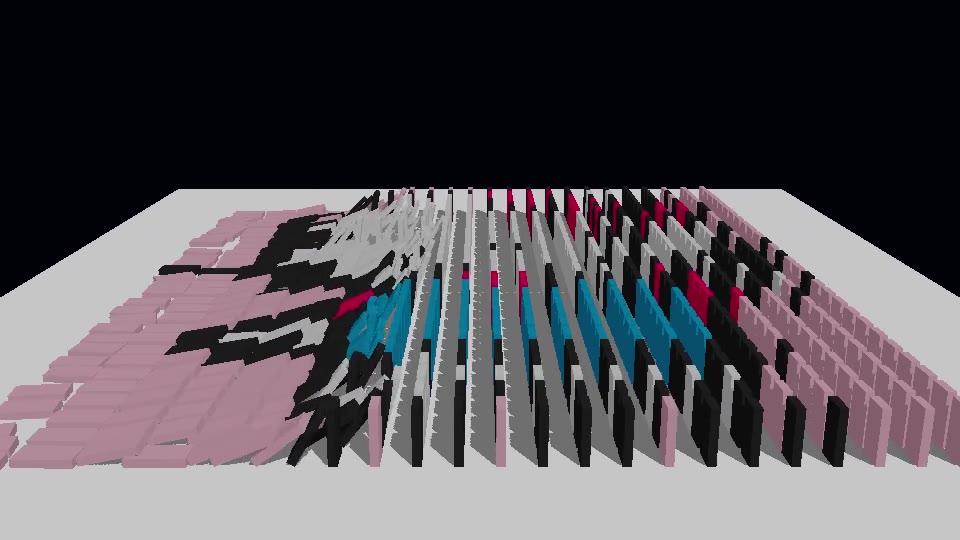
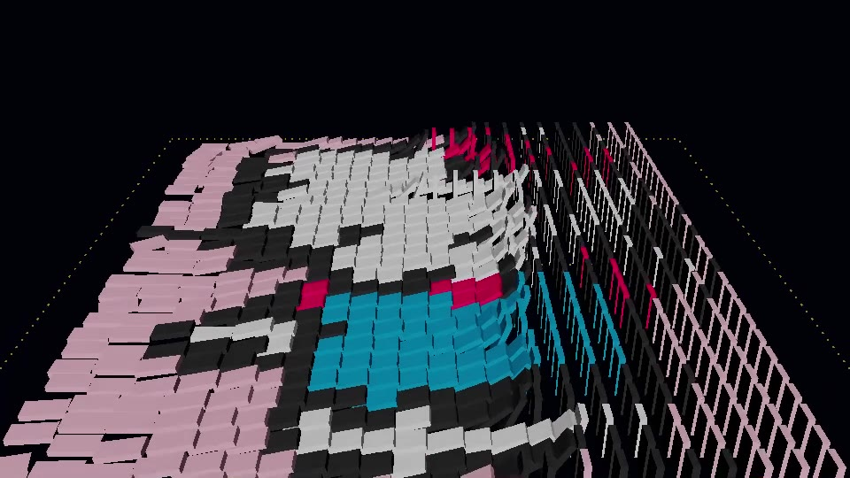
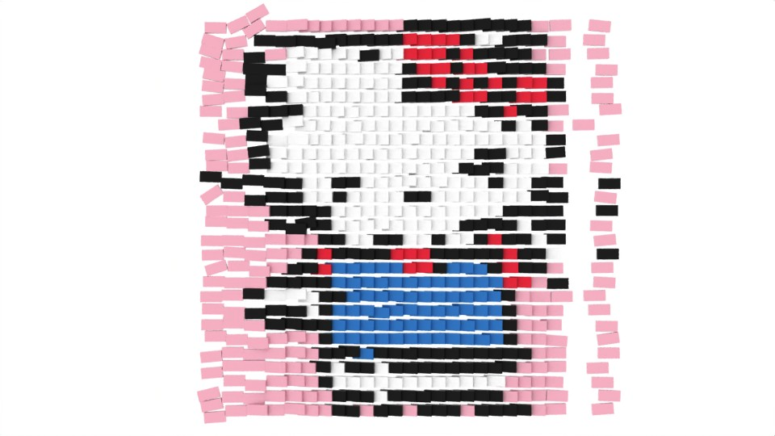
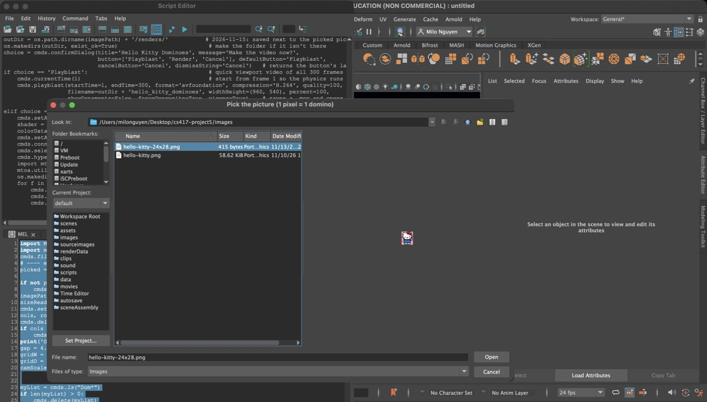
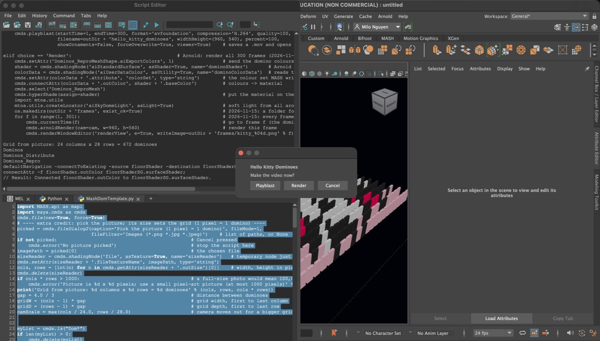
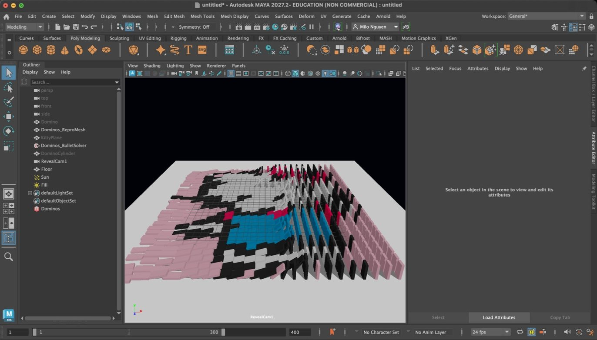
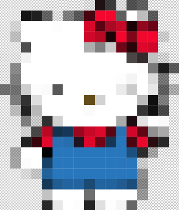
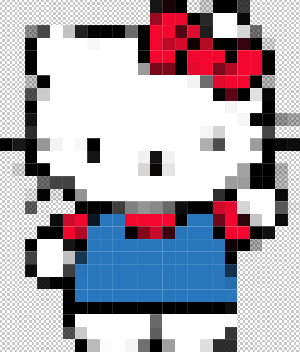
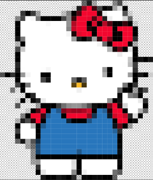
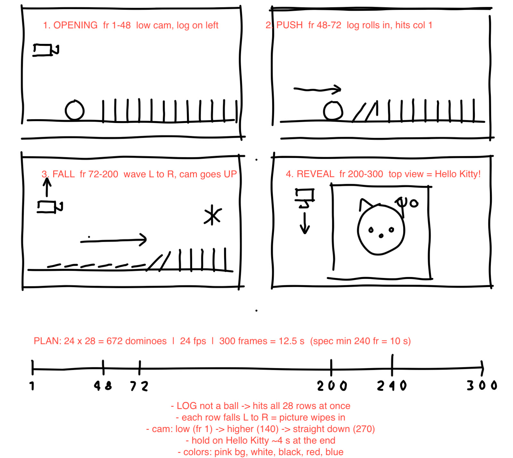

Milo Nguyen · November 15, 2026 · Project 5: Domino Image Reveal
Hello Kitty
A Python script in Maya knocks over 672 coloured dominoes. When they land, they form Hello Kitty.
672dominoes (24 × 28)
12 s300 frames at 24 fps
1Python script
5colours
Shots




The picture


How the script works
- Pick a picture. Each pixel becomes one domino.
- Build the scene. MASH lines up the coloured dominoes and adds physics, a floor, lights and a camera.
- Push. A log knocks the first column, and every row falls in a chain.
- Save. Choose a quick video or a full Arnold render.
Extra credit
fileDialog2 picks the picture, and the grid size comes from its pixel size.
Behind the scenes


fileDialog2 asks for the picture.

confirmDialog asks for the output.

Planning the size
I shrank the picture in Photopea (Image Size, Nearest Neighbor) to compare grids.

Too small: the outline breaks and the eyes are lost.

Chosen: the face, eyes and bow read clearly.

Clearest, but too many dominoes: slow to simulate.
Storyboard
